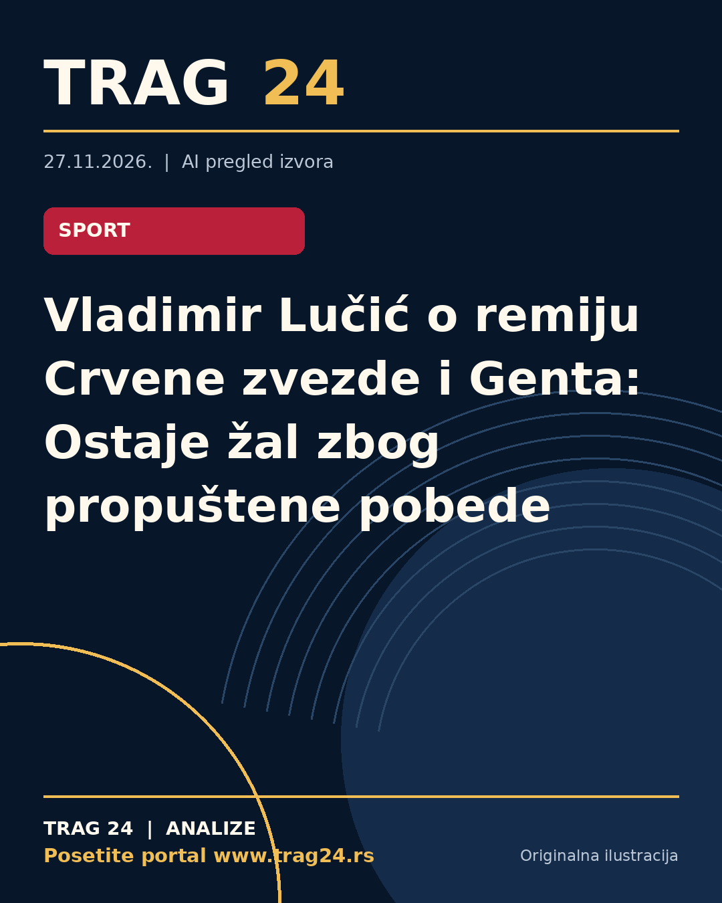

Vladimir Lučić o remiju Crvene zvezde i Genta: Ostaje žal zbog propuštene pobede

ŠTA SE DOGODILO
Crvena zvezda je odigrala nerešeno sa Gentom rezultatom 1:1 u okviru petog kola Lige konferencija. Vladimir Lučić, koji je tokom meča pokrivao više pozicija na terenu, govorio je o svojoj ulozi i utiscima nakon utakmice.
HRONOLOGIJA
Utakmica između Genta i Crvene zvezde igrana je u Liga konferenciji, a meč je završen remijem 1:1. Lučić je tokom susreta menjao pozicije sa leve na desnu stranu, sa naglaskom na levu stranu gde mu je lakše zbog korišćenja 'kontra noge'.
ŠTA NAVODE IZVORI
Lučić je izjavio da mu je prirodno da igra na obe strane terena, ali da mu je lakše da neutrališe protivničke bekove sa leve strane. Navodi da je pokušao da zaustavi beka Arauha koji je dao gol iz prekida. Iako je imao prilike za gol, nije uspeo da ih iskoristi. Takođe je ocenio da je Crvena zvezda bila bolja u svim segmentima igre i da je želela pobedu više od protivnika, te da ostaje žal što nisu osvojili sva tri boda.
ŠTA JE POTVRĐENO
Utakmica u Ligi konferencija za Crvenu zvezdu završena je rezultatom 1:1. Vladimir Lučić je za medije potvrdio svoje učešće na više pozicija tokom utakmice, kao i da je želeo pobedu i smatra da je ekipa bila bolja tokom meča. Gol Genta postignut je iz prekida, dok je Crvena zvezda takođe uspela da postigne jedan gol.
ŠTA NIJE POTVRĐENO
Nema potvrda o eventualnim taktičkim promenama trenera Alberta Rijere osim njegovih eksperimenata sa Lučićem na različitim pozicijama. Takođe, nije potvrđeno da je Lučić direktno odgovoran za gol iz prekida Genta, samo je naveo da nije uspeo da neutralizuje beka koji je dao gol.
ŠTA OSTАJE OTVORENO: Ostaje nejasno kako će Crvena zvezda nastaviti sa taktičkim pristupima u narednim utakmicama, kao i koji će uticaj imati iskustva sa ovog meča na buduće nastupe. Takođe, ostaje otvoreno pitanje koliko će ova utakmica uticati na plasman i dalji tok takmičenja u Ligi konferencija.
Izvori
- https://mondo.rs/Sport/Fudbal/a2317474/vladimir-lucic-ostaje-zal-zbog-tri-boda.html
- https://www.novosti.rs/sport/fudbal/1675153/lucic-nakon-remija-zvezde-genta-bili-smo-bolji-svakom-segmentu-ostaje-zal-pobedom
Ova analiza je pripremljena uz pomoć veštačke inteligencije na osnovu javno dostupnih izvora. Navodi izvora nisu nužno nezavisno potvrđeni.